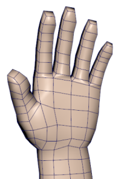
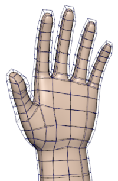
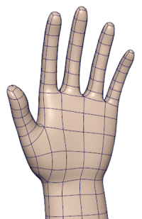

更改平滑度会影响 Maya 在屏幕上为选定对象绘制 NURBS 和细分曲面的精确程度。您可以使用更粗糙的显示效果，以便加快复杂场景的屏幕绘制速度。这仅会影响选定对象在视图面板中的显示，但不会影响其实际几何体，因此不会渲染结果。
对于多边形网格对象，平滑度显示由属性编辑器中对象形状节点的“平滑网格预览”(Smooth Mesh Preview)选项控制。请参见平滑网格预览概述。如果要将平滑网格预览转化为实际几何体，请参见将平滑网格预览转化为多边形。
| 选定对象的显示级别 | 操作 | |
|---|---|---|
|
粗糙几何体 |
 |
按 1 键 也可以使用获取比使用“粗糙”(Rough)选项更快/更粗糙的近似 NURBS 曲面。 |
|
中等几何体 对于多边形对象，这将显示大致框架和平滑预览。 |
 |
按 2 键 对于多边形对象，这将选择“平滑网格预览”(Smooth Mesh Preview)和“框架 + 平滑网格”(Cage + Smooth Mesh)属性。 |
|
平滑几何体 |
 |
按 3 键 对于多边形对象，这将选择“平滑网格预览”(Smooth Mesh Preview)和“平滑网格”(Smooth Mesh)属性。 |